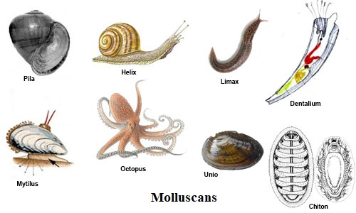

MOLLUSC

Molluscs (or mollusks) are an important phylum of invertebrate animals.
Most of them are marine. They have huge numbers in-shore, that is, in shallow water.
They are the largest marine phylum, with about 85,000 living species, 23% of all named marine organisms.
They also occur in freshwater and on land.
Molluscs are the largest marine phylum, comprising about 23% of all the named marine organisms.
Numerous molluscs also live in freshwater and terrestrial habitats. They are highly diverse, not just in size and anatomical structure, but also in behaviour and habitat.
The phylum is typically divided into 8 or 9 taxonomic classes, of which two are entirely extinct.
Cephalopod molluscs, such as squid, cuttlefish, and octopuses, are among the most neurologically advanced of all invertebrates—and either the giant squid or the colossal squid is the largest known invertebrate species.
The gastropods (snails and slugs) are by far the most numerous molluscs and account for 80% of the total classified species.
Molluscs have been and still are an important food source for anatomically modern humans.
A risk of food poisoning exists from toxins that can accumulate in certain molluscs under specific conditions, however, and because of this, many countries have regulations to reduce this risk.
Molluscs have, for centuries, also been the source of important luxury goods, notably pearls, mother of pearl, Tyrian purple dye, and sea silk.
Their shells have also been used as money in some preindustrial societies.
Top
Home